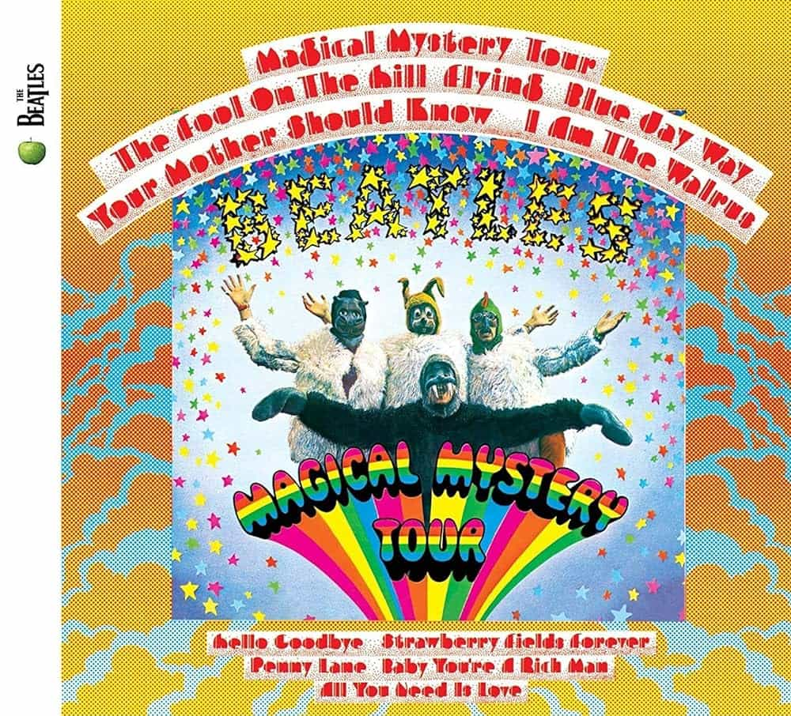

Magical Mystery Tour
Magical Mystery Tour remains somewhat of an overlooked anomaly in the Beatles' anthology, following up in the footsteps of arguably their opus and at core a soundtrack for yet another film. However, in spite of the mixed reception it received, for my money Magical Mystery Tour is one of the Beatles' most complete records, delving into psychedelia and wackiness without sacrificing quality, especially the final half. The title track is forgettable, but The Fool On The Hill is a catchy Paul joint, and Flying is a neat instrumental work. Blue Jay Way marks prime weird John Lennon stuff in a great way, as does I Am The Walrus. From there Hello, Goodbye, Strawberry Fields Forever and Penny Lane is a contender for the best three-track run in any Beatles record, followed with great closers in Baby, You're A Rich Man and All You Need Is Love. While a bit all over the place, Magical Mystery Tour is an outstanding and underrated record for the Beatles.
Magical Mystery Tour - 2:50
The Fool On The Hill - 2:59
Flying - 2:15
Blue Jay Way - 3:55
Your Mother Should Know - 2:28
I Am The Walrus - 4:35
Hello, Goodbye - 3:28
Strawberry Fields Forever - 4:07
Penny Lane - 3:00
Baby, You're A Rich Man - 3:01
All You Need Is Love - 3:50